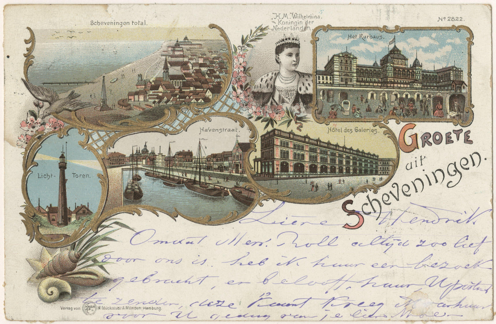

Wish You Were Here!
The seagull received a postcard from the shore crab in Scheveningen, saying they miss him at the sea—he’s always out in the city these days.
The seagull stands at the bar (its program and menu inspired by Club PIP Den Haag and Restaurant Bar Laak), holding the postcard.
He’s having a good time, enjoying what the nightlife in The Hague has to offer.
Inspired by the way seagulls have shifted from the coast to the city, I wanted to illustrate the contrast between Scheveningen and the inner city, and reflect on the exciting development of The Hague’s nightlife.
Inspired by the way seagulls have shifted from the coast to the city, I wanted to illustrate the contrast between Scheveningen and the inner city, and reflect on the exciting development of The Hague’s nightlife.
Medium
Water color on paper,
A2
Edition
Press
Den Haag Central 2025-08-07
Stadstekenaar

Kaart 'Groete uit Scheveningen' met beelden van Koningin Wilhelmina, strand en dorp, vuurtoren, Kurhaus, Hotel des Galeries en de binnenhaven tussen Havenkade en Badhuiskade. 1899